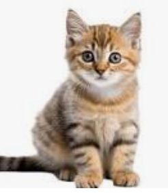

cat

The domestic cat (Felis catus) is a small, carnivorous mammal in the Felidae family, domesticated for approximately 10,000 years for rodent control and companionship. Known for their agility, retractable claws, and high intelligence, cats are specialized nocturnal hunters with exceptional night vision. They communicate through vocalizations like purring and meowing, as well as body language.